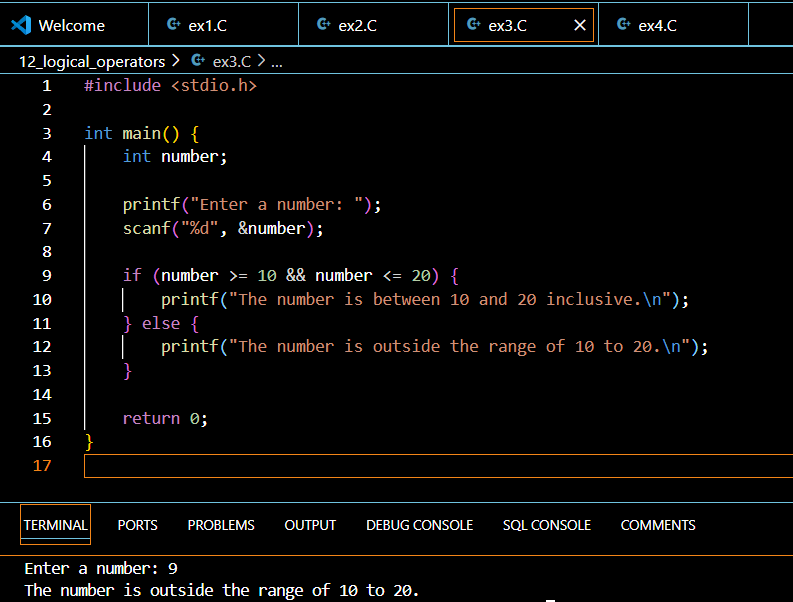
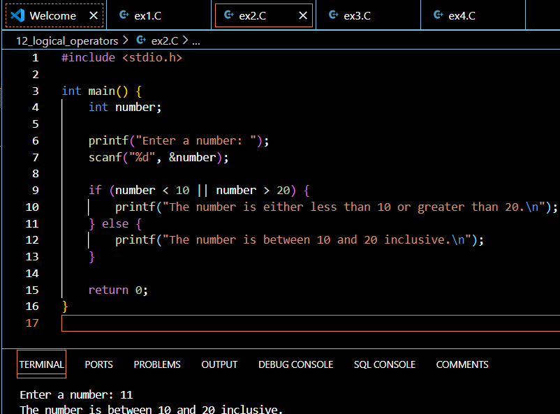
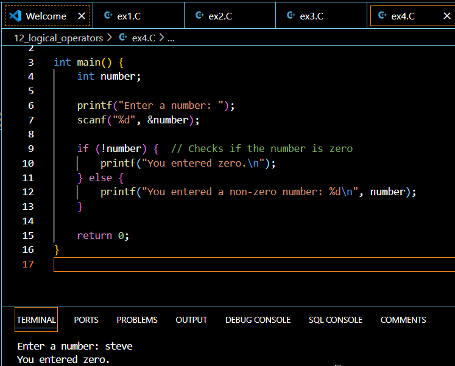

Introduction to Logical Operators
Logical operators are fundamental building blocks in C programming that allow us to make decisions and control program flow based on multiple conditions. These operators work with Boolean values (true/false) and are essential for creating complex decision-making structures in your programs.
Why Are Logical Operators Important?
In modern programming, logical operators serve as the backbone of decision-making processes. They enable programmers to:
- Combine multiple conditions in if statements
- Create complex loop controls
- Implement efficient data validation
- Build sophisticated algorithms
- Enhance code readability
The Three Main Logical Operators in C
The AND Operator (&&)
The AND operator (&&) returns true only when both operands are true. Here’s how it works:
if (age >= 18 && hasValidID) {
printf("Can purchase alcohol");
}
Truth table for AND:
A B A && B
true true true
true false false
false true false
false false falseThe OR Operator (||)
The OR operator (||) returns true if at least one operand is true:
if (isStudent || isSenior) {
printf("Eligible for discount");
}
Truth table for OR:
A B A || B
true true true
true false true
false true true
false false falseThe NOT Operator (!)
The NOT operator (!) inverts the boolean value:
if (!isGameOver) {
printf("Continue playing");
}
Truth table for NOT:
A !A
true false
false trueTruth Tables and Operator Precedence
When working with logical operators, understanding precedence is crucial: 1. ! (highest precedence) 2. && 3. || (lowest precedence)
Example:
if (!isRaining && temperature > 20 || isWeekend) {
// Expression evaluation order: (!isRaining) && (temperature > 20) || isWeekend
}Common Use Cases for Logical Operators
Decision Making with if Statements
if (age >= 18 && !hasVoted && isRegistered) {
printf("You can vote!");
} else {
printf("You cannot vote.");
}Loop Control with while and for
while (attempts < maxAttempts && !success) {
// Try operation
attempts++;
}Best Practices When Using Logical Operators
- Use parentheses for clarity
- Keep conditions simple and readable
- Avoid deep nesting of logical operations
- Consider short-circuit evaluation
- Use meaningful variable names for boolean values
Common Mistakes to Avoid
- Confusing && with &
- Forgetting operator precedence
- Using = instead of == in conditions
- Not considering short-circuit evaluation
- Creating overly complex logical expressions
Short-Circuit Evaluation
C uses short-circuit evaluation for logical operators:
// If isValid is false, checkData() won't execute
if (isValid && checkData()) {
// Process data
}Your Turn!
Try solving this problem:
Write a program that checks if a number is within a valid range (1-100) AND is even.
// Your solution hereClick to see the solution
Solution:
#include <stdio.h>
int main() {
int number;
printf("Enter a number: ");
scanf("%d", &number);
if (number >= 1 && number <= 100 && number % 2 == 0) {
printf("%d is a valid even number\n", number);
} else {
printf("%d is not valid\n", number);
}
return 0;
}Quick Takeaways
- Logical operators work with boolean values
- && requires both conditions to be true
- || requires at least one condition to be true
- ! inverts the boolean value
- Understanding short-circuit evaluation is crucial
- Proper operator precedence ensures correct results
Frequently Asked Questions
Q: What’s the difference between & and &&?
A: & is a bitwise operator that compares bits, while && is a logical operator that works with boolean values.
Q: Can I chain multiple logical operators?
A: Yes, but use parentheses for clarity and consider breaking complex conditions into smaller parts.
Q: Does the order of conditions matter?
A: Yes, due to short-circuit evaluation, place conditions that are more likely to be false first when using &&.
Q: Can I use logical operators with numbers?
A: Yes, in C, any non-zero value is considered true, and zero is false.
Q: How do I avoid common logical operator mistakes?
A: Use proper indentation, parentheses, and test edge cases thoroughly.
References
GeeksforGeeks. (2024). “Logical Operators in C.” Retrieved from https://www.geeksforgeeks.org/logical-operators-in-c/
freeCodeCamp. (2024). “C Operator - Logic Operators in C Programming.” Retrieved from https://www.freecodecamp.org/news/c-operator-logic-operators-in-c-programming/
Programiz. (2024). “C Programming Operators.” Retrieved from https://www.programiz.com/c-programming/c-operators
GeeksforGeeks. (2024). “Operators in C.” Retrieved from https://www.geeksforgeeks.org/operators-in-c/
Note: These resources provide additional information and examples about logical operators and general operators in C programming. They are regularly updated with the latest programming practices and standards.
Conclusion
Understanding logical operators is crucial for writing efficient and effective C programs. Practice using these operators in different scenarios to become more comfortable with them. Remember to focus on code readability and maintainability when implementing logical operations.
Did you find this article helpful? Share it with fellow programmers and leave a comment below with your thoughts or questions about logical operators in C!
Happy Coding! 🚀
You can connect with me at any one of the below:
Telegram Channel here: https://t.me/steveondata
LinkedIn Network here: https://www.linkedin.com/in/spsanderson/
Mastadon Social here: https://mstdn.social/@stevensanderson
RStats Network here: https://rstats.me/@spsanderson
GitHub Network here: https://github.com/spsanderson
Bluesky Network here: https://bsky.app/profile/spsanderson.com